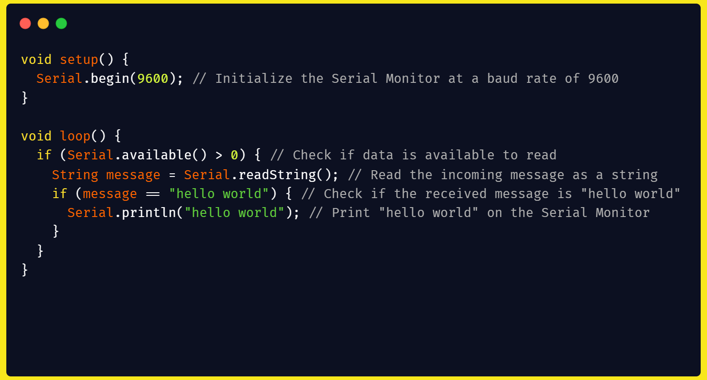

Q1.Write a program to Blink default Light Emitting Diode(LED) on Arduino board with the delay of 2 sec.

Q1.Write a program to interface DHT sensor with LED. The program will switch on LED once the temperature rise above 30 degrees.
Q1.Write a program to interface buzzer and LED, whenever the button is pressed the buzzer give beep for 100ms and LED status is toggled.
Q1.Write a program to interface buzzer with arduino board to buzz on/off with delay of 2 sec.
Q1.Write a program to control an LED using a Light Dependent Resistor (LDR). Provide the necessary circuit diagram and write the Arduino code. Explain how the LDR works in this setup and how the threshold value is determined for switching the LED on or off.
Q1.Write a program to run a LED for 2 secs after every 3secs.
Q1.Write a program to interface LEDs at pins 10, 11, 12, 13 and buttons at pins 7, 8. When the button at pin 7 (increment button) is pressed for the first time, the LED at pin 10 is switched on. When the button is pressed a second time, the LED at pin 11 is switched on. Similarly, when the button at pin 8 (decrement button) is pressed, the LEDs are switched off sequentially.
Q1.Write a program to interface DHT temperature sensor and a DC motor to exhibit a real life situation that whenever temperature rises above a particular value the DC motor fan starts and when temperature falls below a value, the motor stops.
Q1.Write a sketch that blinks a single LED at a rate of 500ms on and 500ms off for 10 cycles, then continue to decrease at this same rate and pattern until it reaches 2 or then repeats starting from 500ms.
Q1.Sense the LDR value and print it both on the LCD and serial monitor.
Q1.Sense the air index value from the MQ135 and print its value on the LCD.
Q1.Print "hello world" on the serial monitor when the Arduino receives the message "hello world".

Q1.To interface a temperature sensor (LM35) with an Arduino and display the temperature data on an LCD.
Q1.Control a 220V lamp using a relay module connected to an Arduino.
Q1.Write a program to measure the pollution level in a particular environment using the MQ135 sensor and display its value on the LCD.
Q1.Write a program to interface an LCD display with a sensor circuit.
Q1. Write a program to interface an LCD and keypad with an Arduino board, and display the key pressed from the keypad on the LCD.
Q1.Write a program to interface LEDs at two PWM pins and exhibit LED fading using an Arduino.
Q1.Write a program to interface an LDR with an Arduino and display the values read on the Serial Monitor with a delay of 2 seconds.